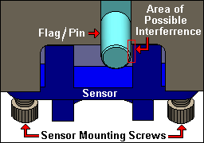

Adjusting Home Sensor During Troubleshooting
This procedure describes how to adjust the home sensor when the flag or pin is rubbing the carriage home sensor and causing possible carriage errors.
Perform this procedure as part of carriage troubleshooting, to adjust the home sensor when the flag or pin is rubbing the carriage home sensor and causing possible carriage errors.
Note: By design there is only a small amount of clearance between the flag or pin and the sensor. The two should never be in contact with each other.

-
Adjust the home sensor.
-
Verify the proper operation of the carriage.
- Initialize the instrument.
- Confirm the carriage alignments to all intersecting devices. Adjust and align as needed.
- Perform five cycles of the Reaction Route exerciser to verify correct vessel movement into and out of the reagent carriages.
- Remove the interlock bypass and initialize the instrument.
-
Verify system operation.